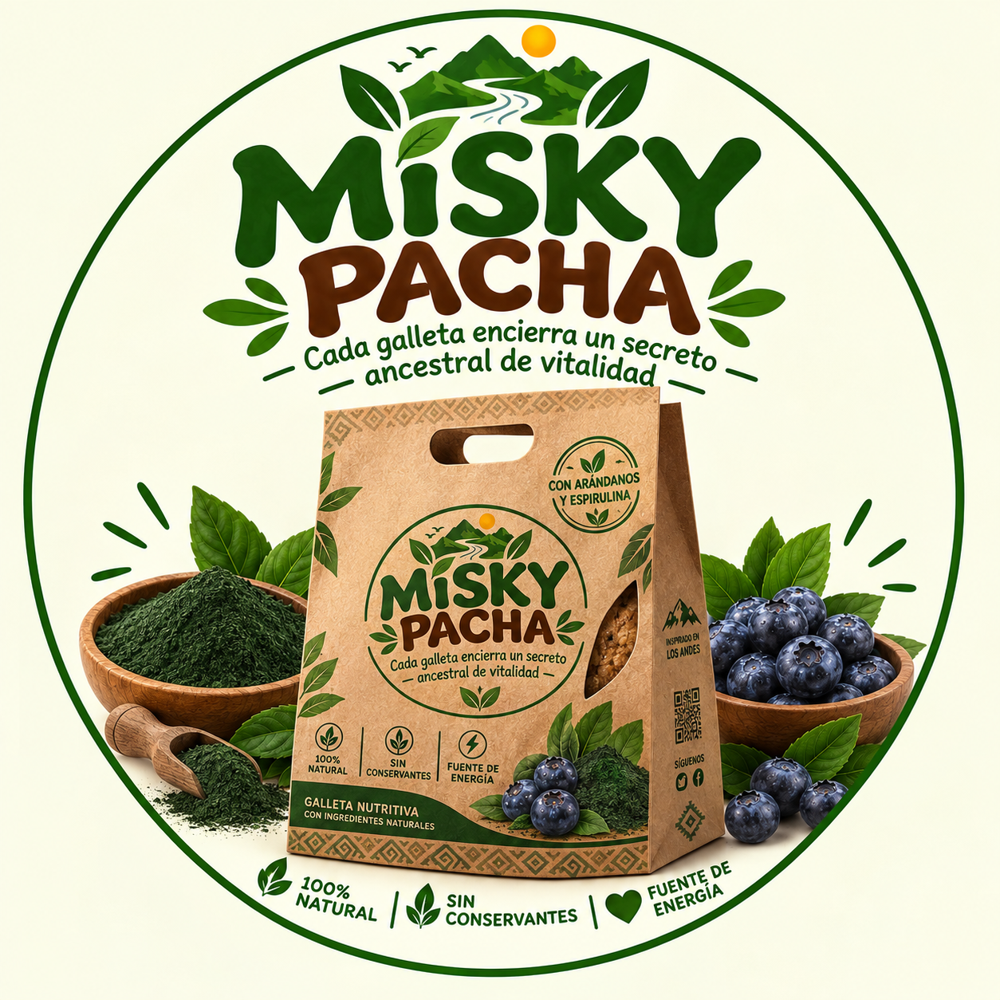

🍃
100% natural
Una identidad de producto inspirada en ingredientes naturales y una presentación de estilo artesanal.
MISKY PACHA es una propuesta de producto que combina una identidad inspirada en los Andes con arándanos y espirulina, presentada en un formato artesanal y moderno.

Una identidad de producto inspirada en ingredientes naturales y una presentación de estilo artesanal.
Dos ingredientes protagonistas que forman parte del concepto y la identidad visual de MISKY PACHA.
Una propuesta pensada para acompañar diferentes momentos del día dentro del concepto de la marca.
MISKY PACHA busca desarrollar una propuesta diferenciada de galleta, integrando ingredientes destacados, una imagen de marca reconocible y elementos visuales inspirados en la cultura andina.
MISKY PACHA nace como una propuesta que busca unir elementos de inspiración andina con una presentación moderna, atractiva y fácil de reconocer.
“Cada galleta encierra un secreto ancestral de vitalidad”.
Este QR se genera automáticamente con la dirección de la página cuando el proyecto sea publicado gratuitamente.
Al publicar la página en GitHub Pages, el QR mostrará automáticamente la URL pública del proyecto.